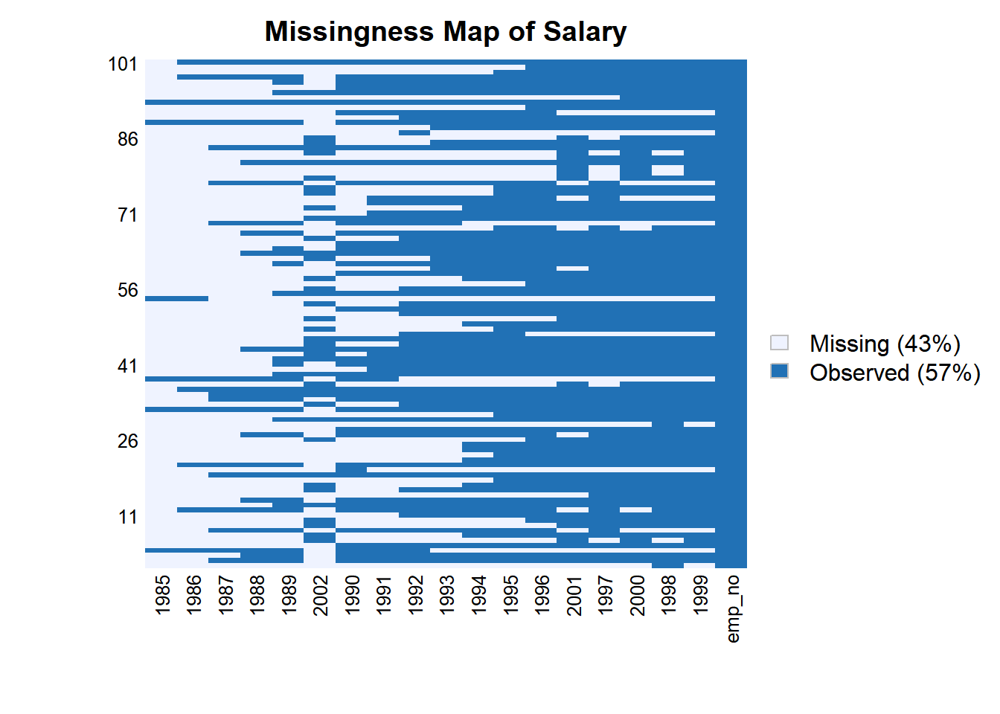

R数据预处理
Boylad · 2018-12-14
重命名数据变量
数据框允许用户根据行名和列名选取和过滤数据。由于并不是所有的数据集都包含行名和列名，因此我们需要使用内置的命名函数重命名数据集。读取文件：
setwd("c:/Users/Boylad/Documents/mydata/R_for_Data_Science_Cookbook")
employees <- read.csv("employees.csv", header = FALSE)
salaries <- read.csv("salaries.csv", header = FALSE)使用函数names()查看数据集的列名：
names(employees)
## [1] "V1" "V2" "V3" "V4" "V5" "V6"
names(salaries)
## [1] "V1" "V2" "V3" "V4"接着，使用给定的名称向量重命名列:
names(employees) <- c("emp_no", "birth_date", "first_name", "last_name", "gender",
"hire_date")
names(employees)
## [1] "emp_no" "birth_date" "first_name" "last_name" "gender"
## [6] "hire_date"除了使用函数names,还可以使用函数colnames重命名列：
colnames(salaries) <- c("emp_no", "salary", "from_date", "to_date")
names(salaries)
## [1] "emp_no" "salary" "from_date" "to_date"除了改变列名，我们也可以使用函数rownames改变行名：
rownames(salaries) <- 1:length(salaries$emp_no)
head(salaries)
## emp_no salary from_date to_date
## 1 10001 60117 1986-06-26 1987-06-26
## 2 10001 62102 1987-06-26 1988-06-25
## 3 10001 66074 1988-06-25 1989-06-25
## 4 10001 66596 1989-06-25 1990-06-25
## 5 10001 66961 1990-06-25 1991-06-25
## 6 10001 71046 1991-06-25 1992-06-24为了避免使用colnames和rownames两个函数确定行名和列名，我们也可以使用函数dimnames在一次操作中同时修改行名和列名(list的第一个输入向量代表行名，第二个输入向量代表列名)：
dimnames(employees) <- list(c(1, 2, 3, 4, 5, 6, 7, 8, 9, 10),
c("emp_no", "birth_date", "first_name",
"last_name", "gender", "hire_date"))
head(employees)
## emp_no birth_date first_name last_name gender hire_date
## 1 10001 1953-09-02 Georgi Facello M 1986-06-26
## 2 10002 1964-06-02 Bezalel Simmel F 1985-11-21
## 3 10003 1959-12-03 Parto Bamford M 1986-08-28
## 4 10004 1954-05-01 Chirstian Koblick M 1986-12-01
## 5 10005 1955-01-21 Kyoichi Maliniak M 1989-09-12
## 6 10006 1953-04-20 Anneke Preusig F 1989-06-02
### 转换数据类型
首先，使用函数class()查看每个属性的数据类型：
class(employees$birth_date)
## [1] "character"也可以使用函数str()查看所有属性的数据类型：
str(employees)
## 'data.frame': 10 obs. of 6 variables:
## $ emp_no : int 10001 10002 10003 10004 10005 10006 10007 10008 10009 10010
## $ birth_date: chr "1953-09-02" "1964-06-02" "1959-12-03" "1954-05-01" ...
## $ first_name: chr "Georgi" "Bezalel" "Parto" "Chirstian" ...
## $ last_name : chr "Facello" "Simmel" "Bamford" "Koblick" ...
## $ gender : chr "M" "F" "M" "M" ...
## $ hire_date : chr "1986-06-26" "1985-11-21" "1986-08-28" "1986-12-01" ...然后，需要把birth_date和hire_date转换为日期格式(如果想通过birth_date属性计算一个人的年龄，就需要把它转换成日期格式):
employees$birth_date <- as.Date(employees$birth_date)
employees$hire_date <- as.Date(employees$hire_date)也需要把first_name和last_name转换为字符类型(因子类型限制了属性在取值上的选择，我们并不能自由地给数据集添加记录。由于从数据集中准确地找到相同的姓和名并不容易，需要把last_name和first_name转换成字符类型)：
employees$first_name <- as.character(employees$first_name)
employees$last_name <- as.character(employees$last_name)再次使用str()查看数据集：
str(employees)
## 'data.frame': 10 obs. of 6 variables:
## $ emp_no : int 10001 10002 10003 10004 10005 10006 10007 10008 10009 10010
## $ birth_date: Date, format: "1953-09-02" "1964-06-02" ...
## $ first_name: chr "Georgi" "Bezalel" "Parto" "Chirstian" ...
## $ last_name : chr "Facello" "Simmel" "Bamford" "Koblick" ...
## $ gender : chr "M" "F" "M" "M" ...
## $ hire_date : Date, format: "1986-06-26" "1985-11-21" ...也可以把salaries中的from_date和to_date转换为日期类型：
salaries$from_date <- as.Date(salaries$from_date)
salaries$to_date <- as.Date(salaries$to_date)除了使用as函数转换数据类型，也可以在数据导入阶段指定数据类型。以函数read.csv()为例，可以在colClasses参数中指定数据类型。如果希望R自动地选择数据类型(即自动把emp_no转换为整型)，只需要在colClasses中指明NA：
setwd("c:/Users/Boylad/Documents/mydata/R_for_Data_Science_Cookbook")
employees1 <- read.csv("employees.csv", colClasses = c(NA, "Date", "character",
"character", "factor",
"Date"), header = FALSE)
str(employees1)
## 'data.frame': 10 obs. of 6 variables:
## $ V1: int 10001 10002 10003 10004 10005 10006 10007 10008 10009 10010
## $ V2: Date, format: "1953-09-02" "1964-06-02" ...
## $ V3: chr "Georgi" "Bezalel" "Parto" "Chirstian" ...
## $ V4: chr "Facello" "Simmel" "Bamford" "Koblick" ...
## $ V5: Factor w/ 2 levels "F","M": 2 1 2 2 2 1 1 2 1 1
## $ V6: Date, format: "1986-06-26" "1985-11-21" ...使用日期格式
把每一个数据属性转换成合适的数据类型之后，可以看到employees和salaries中的一些属性是日期类型的。因此，可以计算雇员的出生日期和当前日期之间的年份数，进而得出每个雇员的年龄。这里介绍如何使用内置日期函数和lubridate程序包来操作日期格式的数据。
可以使用以下代码，加上或者减去日期格式属性中的一些天数：
employees$hire_date + 30
## [1] "1986-07-26" "1985-12-21" "1986-09-27" "1986-12-31" "1989-10-12"
## [6] "1989-07-02" "1989-03-12" "1994-10-15" "1985-03-20" "1989-09-23"可以使用下列代码，获取hire_date和birth_date之间的时间间隔：
employees$hire_date - employees$birth_date
## Time differences in days
## [1] 11985 7842 9765 11902 12653 13192 11586 13357 11993 9581除了得到以天为单位的时间间隔，还可以使用函数difftime获取以周为单位的时间间隔：
difftime(employees$hire_date, employees$birth_date, unit = "weeks")
## Time differences in weeks
## [1] 1712.143 1120.286 1395.000 1700.286 1807.571 1884.571 1655.143 1908.143
## [9] 1713.286 1368.714除了内置的日期操作函数，还可以安装和加载lubridate程序包来操作日期。可以使用函数ymd把日期数据转换成POSIX格式：
library(lubridate)
##
## 载入程辑包：'lubridate'
## The following objects are masked from 'package:base':
##
## date, intersect, setdiff, union
ymd(employees$hire_date)
## [1] "1986-06-26" "1985-11-21" "1986-08-28" "1986-12-01" "1989-09-12"
## [6] "1989-06-02" "1989-02-10" "1994-09-15" "1985-02-18" "1989-08-24"接着，我们可以使用函数as.period查看hire_date和birth_date之间的时长：
span <- interval(ymd(employees$birth_date), ymd(employees$hire_date))
time_period <- as.period(span)
time_period
## [1] "32y 9m 24d 0H 0M 0S" "21y 5m 19d 0H 0M 0S" "26y 8m 25d 0H 0M 0S"
## [4] "32y 7m 0d 0H 0M 0S" "34y 7m 22d 0H 0M 0S" "36y 1m 13d 0H 0M 0S"
## [7] "31y 8m 18d 0H 0M 0S" "36y 6m 27d 0H 0M 0S" "32y 9m 30d 0H 0M 0S"
## [10] "26y 2m 23d 0H 0M 0S"可以使用函数year获取时间间隔：
year(time_period)
## [1] 32 21 26 32 34 36 31 36 32 26可以使用函数now获取当前日期：
now()
## [1] "2020-10-24 17:50:14 CST"可以使用下列代码计算每一个雇员的年龄：
span2 <- interval(ymd(employees$birth_date), now())
year(as.period(span2))
## [1] 67 56 60 66 65 67 63 62 68 57添加新的记录
使用rbind给employees添加新的记录：
employees
## emp_no birth_date first_name last_name gender hire_date
## 1 10001 1953-09-02 Georgi Facello M 1986-06-26
## 2 10002 1964-06-02 Bezalel Simmel F 1985-11-21
## 3 10003 1959-12-03 Parto Bamford M 1986-08-28
## 4 10004 1954-05-01 Chirstian Koblick M 1986-12-01
## 5 10005 1955-01-21 Kyoichi Maliniak M 1989-09-12
## 6 10006 1953-04-20 Anneke Preusig F 1989-06-02
## 7 10007 1957-05-23 Tzvetan Zielinski F 1989-02-10
## 8 10008 1958-02-19 Saniya Kalloufi M 1994-09-15
## 9 10009 1952-04-19 Sumant Peac F 1985-02-18
## 10 10010 1963-06-01 Duangkaew Piveteau F 1989-08-24
rbind(employees, c(10011, "1960-01-01", "John", "Doe", "M", "1988-01-01"))
## emp_no birth_date first_name last_name gender hire_date
## 1 10001 1953-09-02 Georgi Facello M 1986-06-26
## 2 10002 1964-06-02 Bezalel Simmel F 1985-11-21
## 3 10003 1959-12-03 Parto Bamford M 1986-08-28
## 4 10004 1954-05-01 Chirstian Koblick M 1986-12-01
## 5 10005 1955-01-21 Kyoichi Maliniak M 1989-09-12
## 6 10006 1953-04-20 Anneke Preusig F 1989-06-02
## 7 10007 1957-05-23 Tzvetan Zielinski F 1989-02-10
## 8 10008 1958-02-19 Saniya Kalloufi M 1994-09-15
## 9 10009 1952-04-19 Sumant Peac F 1985-02-18
## 10 10010 1963-06-01 Duangkaew Piveteau F 1989-08-24
## 11 10011 1960-01-01 John Doe M 1988-01-01可以把新的结果重新分配给数据框employees:
employees <- rbind(employees, c(10011, "1960-01-01", "John", "Doe", "M", "1988-01-01"))除了给原始数据集添加新的记录，也可以使用NA默认值添加新的position属性：
cbind(employees, Position = NA)
## emp_no birth_date first_name last_name gender hire_date Position
## 1 10001 1953-09-02 Georgi Facello M 1986-06-26 NA
## 2 10002 1964-06-02 Bezalel Simmel F 1985-11-21 NA
## 3 10003 1959-12-03 Parto Bamford M 1986-08-28 NA
## 4 10004 1954-05-01 Chirstian Koblick M 1986-12-01 NA
## 5 10005 1955-01-21 Kyoichi Maliniak M 1989-09-12 NA
## 6 10006 1953-04-20 Anneke Preusig F 1989-06-02 NA
## 7 10007 1957-05-23 Tzvetan Zielinski F 1989-02-10 NA
## 8 10008 1958-02-19 Saniya Kalloufi M 1994-09-15 NA
## 9 10009 1952-04-19 Sumant Peac F 1985-02-18 NA
## 10 10010 1963-06-01 Duangkaew Piveteau F 1989-08-24 NA
## 11 10011 1960-01-01 John Doe M 1988-01-01 NA并且，可以根据当前日期和每一个雇员的birth_date添加新的age属性：
span <- interval(ymd(employees$hire_date), now())
time_period <- as.period(span)
employees$age <- year(time_period)
employees
## emp_no birth_date first_name last_name gender hire_date age
## 1 10001 1953-09-02 Georgi Facello M 1986-06-26 34
## 2 10002 1964-06-02 Bezalel Simmel F 1985-11-21 34
## 3 10003 1959-12-03 Parto Bamford M 1986-08-28 34
## 4 10004 1954-05-01 Chirstian Koblick M 1986-12-01 33
## 5 10005 1955-01-21 Kyoichi Maliniak M 1989-09-12 31
## 6 10006 1953-04-20 Anneke Preusig F 1989-06-02 31
## 7 10007 1957-05-23 Tzvetan Zielinski F 1989-02-10 31
## 8 10008 1958-02-19 Saniya Kalloufi M 1994-09-15 26
## 9 10009 1952-04-19 Sumant Peac F 1985-02-18 35
## 10 10010 1963-06-01 Duangkaew Piveteau F 1989-08-24 31
## 11 10011 1960-01-01 John Doe M 1988-01-01 32也可以使用函数transform添加多个变量：
employees2 <- transform(employees, age = year(time_period),
Position = "RD", marrital = NA)
employees2
## emp_no birth_date first_name last_name gender hire_date age Position
## 1 10001 1953-09-02 Georgi Facello M 1986-06-26 34 RD
## 2 10002 1964-06-02 Bezalel Simmel F 1985-11-21 34 RD
## 3 10003 1959-12-03 Parto Bamford M 1986-08-28 34 RD
## 4 10004 1954-05-01 Chirstian Koblick M 1986-12-01 33 RD
## 5 10005 1955-01-21 Kyoichi Maliniak M 1989-09-12 31 RD
## 6 10006 1953-04-20 Anneke Preusig F 1989-06-02 31 RD
## 7 10007 1957-05-23 Tzvetan Zielinski F 1989-02-10 31 RD
## 8 10008 1958-02-19 Saniya Kalloufi M 1994-09-15 26 RD
## 9 10009 1952-04-19 Sumant Peac F 1985-02-18 35 RD
## 10 10010 1963-06-01 Duangkaew Piveteau F 1989-08-24 31 RD
## 11 10011 1960-01-01 John Doe M 1988-01-01 32 RD
## marrital
## 1 NA
## 2 NA
## 3 NA
## 4 NA
## 5 NA
## 6 NA
## 7 NA
## 8 NA
## 9 NA
## 10 NA
## 11 NA除了使用美元符号和函数transform，我们可以使用函数with创建新的变量：
with(employees, year(birth_date))
## [1] 1953 1964 1959 1954 1955 1953 1957 1958 1952 1963 1960
employees$birth_year <- with(employees, year(birth_date))
employees
## emp_no birth_date first_name last_name gender hire_date age birth_year
## 1 10001 1953-09-02 Georgi Facello M 1986-06-26 34 1953
## 2 10002 1964-06-02 Bezalel Simmel F 1985-11-21 34 1964
## 3 10003 1959-12-03 Parto Bamford M 1986-08-28 34 1959
## 4 10004 1954-05-01 Chirstian Koblick M 1986-12-01 33 1954
## 5 10005 1955-01-21 Kyoichi Maliniak M 1989-09-12 31 1955
## 6 10006 1953-04-20 Anneke Preusig F 1989-06-02 31 1953
## 7 10007 1957-05-23 Tzvetan Zielinski F 1989-02-10 31 1957
## 8 10008 1958-02-19 Saniya Kalloufi M 1994-09-15 26 1958
## 9 10009 1952-04-19 Sumant Peac F 1985-02-18 35 1952
## 10 10010 1963-06-01 Duangkaew Piveteau F 1989-08-24 31 1963
## 11 10011 1960-01-01 John Doe M 1988-01-01 32 1960过滤数据
使用head和tail获取employees数据集的前3行和最后3行：
head(employees, 3)
## emp_no birth_date first_name last_name gender hire_date age birth_year
## 1 10001 1953-09-02 Georgi Facello M 1986-06-26 34 1953
## 2 10002 1964-06-02 Bezalel Simmel F 1985-11-21 34 1964
## 3 10003 1959-12-03 Parto Bamford M 1986-08-28 34 1959
tail(employees, 3)
## emp_no birth_date first_name last_name gender hire_date age birth_year
## 9 10009 1952-04-19 Sumant Peac F 1985-02-18 35 1952
## 10 10010 1963-06-01 Duangkaew Piveteau F 1989-08-24 31 1963
## 11 10011 1960-01-01 John Doe M 1988-01-01 32 1960也可以使用方括号并给定从1到3的序列获取数据的前3行：
employees[1:3,]
## emp_no birth_date first_name last_name gender hire_date age birth_year
## 1 10001 1953-09-02 Georgi Facello M 1986-06-26 34 1953
## 2 10002 1964-06-02 Bezalel Simmel F 1985-11-21 34 1964
## 3 10003 1959-12-03 Parto Bamford M 1986-08-28 34 1959还可以指定要选取的列序号：
employees[1:3, 2:4]
## birth_date first_name last_name
## 1 1953-09-02 Georgi Facello
## 2 1964-06-02 Bezalel Simmel
## 3 1959-12-03 Parto Bamford除了从数据集中抽取行、列序列，也可以指定具体的行和列，通过索引向量抽取数据子集：
employees[c(2,5), c(1,3)]
## emp_no first_name
## 2 10002 Bezalel
## 5 10005 Kyoichi如果知道列的名字，也可以通过使用给定的名称向量选取列：
employees[1:3, c("first_name", "last_name")]
## first_name last_name
## 1 Georgi Facello
## 2 Bezalel Simmel
## 3 Parto Bamford另外，也可以使用反向索排除一些列：
employees[1:3, -6]
## emp_no birth_date first_name last_name gender age birth_year
## 1 10001 1953-09-02 Georgi Facello M 34 1953
## 2 10002 1964-06-02 Bezalel Simmel F 34 1964
## 3 10003 1959-12-03 Parto Bamford M 34 1959也可以使用in和！操作符排除一些属性(排除first_name和last_name属性下的数据)：
employees[1:3, !names(employees) %in% c("last_name", "first_name")]
## emp_no birth_date gender hire_date age birth_year
## 1 10001 1953-09-02 M 1986-06-26 34 1953
## 2 10002 1964-06-02 F 1985-11-21 34 1964
## 3 10003 1959-12-03 M 1986-08-28 34 1959还可以设置等号条件获取数据子集(由于需要使用条件来过滤数据记录，我们应该在逗号左边放置过滤标准)：
employees[employees$gender == "M",]
## emp_no birth_date first_name last_name gender hire_date age birth_year
## 1 10001 1953-09-02 Georgi Facello M 1986-06-26 34 1953
## 3 10003 1959-12-03 Parto Bamford M 1986-08-28 34 1959
## 4 10004 1954-05-01 Chirstian Koblick M 1986-12-01 33 1954
## 5 10005 1955-01-21 Kyoichi Maliniak M 1989-09-12 31 1955
## 8 10008 1958-02-19 Saniya Kalloufi M 1994-09-15 26 1958
## 11 10011 1960-01-01 John Doe M 1988-01-01 32 1960还可以使用比较操作符获取数据子集(显示前6行)：
head(salaries[salaries$salary >= 60000 & salaries$salary < 70000,])
## emp_no salary from_date to_date
## 1 10001 60117 1986-06-26 1987-06-26
## 2 10001 62102 1987-06-26 1988-06-25
## 3 10001 66074 1988-06-25 1989-06-25
## 4 10001 66596 1989-06-25 1990-06-25
## 5 10001 66961 1990-06-25 1991-06-25
## 18 10002 65828 1996-08-03 1997-08-03另外substr也可以抽取部分数据记录(函数subtr获取前两个字母为Ge的雇员)：
employees[substr(employees$first_name, 0, 2) == "Ge",]
## emp_no birth_date first_name last_name gender hire_date age birth_year
## 1 10001 1953-09-02 Georgi Facello M 1986-06-26 34 1953正则表达式是另一种获取数据子集的有用而强大的工具(使用函数grep和正则表达式，通过判断名称末尾是否为元音字母，获得雇员数据集)：
employees[grep('[aeious]$', employees$first_name),]
## emp_no birth_date first_name last_name gender hire_date age birth_year
## 1 10001 1953-09-02 Georgi Facello M 1986-06-26 34 1953
## 3 10003 1959-12-03 Parto Bamford M 1986-08-28 34 1959
## 5 10005 1955-01-21 Kyoichi Maliniak M 1989-09-12 31 1955
## 6 10006 1953-04-20 Anneke Preusig F 1989-06-02 31 1953
## 8 10008 1958-02-19 Saniya Kalloufi M 1994-09-15 26 1958除了使用方括号，也可以使用函数subset来获取数据子集。选取雇员数据前3行的first_name和last_name：
subset(employees, rownames(employees) %in% 1:3,
select = c("first_name", "last_name"))
## first_name last_name
## 1 Georgi Facello
## 2 Bezalel Simmel
## 3 Parto Bamford也可以设置条件，按照gender过滤数据：
subset(employees, employees$gender =="M")
## emp_no birth_date first_name last_name gender hire_date age birth_year
## 1 10001 1953-09-02 Georgi Facello M 1986-06-26 34 1953
## 3 10003 1959-12-03 Parto Bamford M 1986-08-28 34 1959
## 4 10004 1954-05-01 Chirstian Koblick M 1986-12-01 33 1954
## 5 10005 1955-01-21 Kyoichi Maliniak M 1989-09-12 31 1955
## 8 10008 1958-02-19 Saniya Kalloufi M 1994-09-15 26 1958
## 11 10011 1960-01-01 John Doe M 1988-01-01 32 1960舍弃数据
可以在过滤条件中排出last_name，舍弃该列：
employees
## emp_no birth_date first_name last_name gender hire_date age birth_year
## 1 10001 1953-09-02 Georgi Facello M 1986-06-26 34 1953
## 2 10002 1964-06-02 Bezalel Simmel F 1985-11-21 34 1964
## 3 10003 1959-12-03 Parto Bamford M 1986-08-28 34 1959
## 4 10004 1954-05-01 Chirstian Koblick M 1986-12-01 33 1954
## 5 10005 1955-01-21 Kyoichi Maliniak M 1989-09-12 31 1955
## 6 10006 1953-04-20 Anneke Preusig F 1989-06-02 31 1953
## 7 10007 1957-05-23 Tzvetan Zielinski F 1989-02-10 31 1957
## 8 10008 1958-02-19 Saniya Kalloufi M 1994-09-15 26 1958
## 9 10009 1952-04-19 Sumant Peac F 1985-02-18 35 1952
## 10 10010 1963-06-01 Duangkaew Piveteau F 1989-08-24 31 1963
## 11 10011 1960-01-01 John Doe M 1988-01-01 32 1960
employees4 <- employees[, -4]
employees4
## emp_no birth_date first_name gender hire_date age birth_year
## 1 10001 1953-09-02 Georgi M 1986-06-26 34 1953
## 2 10002 1964-06-02 Bezalel F 1985-11-21 34 1964
## 3 10003 1959-12-03 Parto M 1986-08-28 34 1959
## 4 10004 1954-05-01 Chirstian M 1986-12-01 33 1954
## 5 10005 1955-01-21 Kyoichi M 1989-09-12 31 1955
## 6 10006 1953-04-20 Anneke F 1989-06-02 31 1953
## 7 10007 1957-05-23 Tzvetan F 1989-02-10 31 1957
## 8 10008 1958-02-19 Saniya M 1994-09-15 26 1958
## 9 10009 1952-04-19 Sumant F 1985-02-18 35 1952
## 10 10010 1963-06-01 Duangkaew F 1989-08-24 31 1963
## 11 10011 1960-01-01 John M 1988-01-01 32 1960或者可以给舍弃的数据分配NULL值：
employees4$hire_date <- NULL
employees4
## emp_no birth_date first_name gender age birth_year
## 1 10001 1953-09-02 Georgi M 34 1953
## 2 10002 1964-06-02 Bezalel F 34 1964
## 3 10003 1959-12-03 Parto M 34 1959
## 4 10004 1954-05-01 Chirstian M 33 1954
## 5 10005 1955-01-21 Kyoichi M 31 1955
## 6 10006 1953-04-20 Anneke F 31 1953
## 7 10007 1957-05-23 Tzvetan F 31 1957
## 8 10008 1958-02-19 Saniya M 26 1958
## 9 10009 1952-04-19 Sumant F 35 1952
## 10 10010 1963-06-01 Duangkaew F 31 1963
## 11 10011 1960-01-01 John M 32 1960要舍弃行，可以通过反向索引，指定希望舍弃的行：
employees4 <- employees4[c(-2, -4, -6),]
employees4
## emp_no birth_date first_name gender age birth_year
## 1 10001 1953-09-02 Georgi M 34 1953
## 3 10003 1959-12-03 Parto M 34 1959
## 5 10005 1955-01-21 Kyoichi M 31 1955
## 7 10007 1957-05-23 Tzvetan F 31 1957
## 8 10008 1958-02-19 Saniya M 26 1958
## 9 10009 1952-04-19 Sumant F 35 1952
## 10 10010 1963-06-01 Duangkaew F 31 1963
## 11 10011 1960-01-01 John M 32 1960除了使用数据过滤或给具体属性指定NULL值，也可以使用函数within移除不需要的属性。所需要的操作只不过是函数rm中放置不需要的名称：
(within(employees4, rm(birth_date, age)))
## emp_no first_name gender birth_year
## 1 10001 Georgi M 1953
## 3 10003 Parto M 1959
## 5 10005 Kyoichi M 1955
## 7 10007 Tzvetan F 1957
## 8 10008 Saniya M 1958
## 9 10009 Sumant F 1952
## 10 10010 Duangkaew F 1963
## 11 10011 John M 1960合并数据
因为salaries和employees都有emp_no，可以使用emp_no作为连接键合并两个数据集：
employees_salary <- merge(employees, salaries, by = "emp_no")
head(employees_salary)
## emp_no birth_date first_name last_name gender hire_date age birth_year
## 1 10001 1953-09-02 Georgi Facello M 1986-06-26 34 1953
## 2 10001 1953-09-02 Georgi Facello M 1986-06-26 34 1953
## 3 10001 1953-09-02 Georgi Facello M 1986-06-26 34 1953
## 4 10001 1953-09-02 Georgi Facello M 1986-06-26 34 1953
## 5 10001 1953-09-02 Georgi Facello M 1986-06-26 34 1953
## 6 10001 1953-09-02 Georgi Facello M 1986-06-26 34 1953
## salary from_date to_date
## 1 71046 1991-06-25 1992-06-24
## 2 74333 1992-06-24 1993-06-24
## 3 66961 1990-06-25 1991-06-25
## 4 76884 1995-06-24 1996-06-23
## 5 80013 1996-06-23 1997-06-23
## 6 75286 1993-06-24 1994-06-24有时希望执行左连接或者右连接，以达到保留employees或salaries所有数据值的目的。要执行左连接，设置all.x为TRUE，然后，我们发现employees所有行在合并结果中保留了下来。相反，如果我们希望保留salaries的所有行，我们可以设置all.y为TRUE。
tail(merge(employees, salaries, by = "emp_no", all.y = TRUE))
## emp_no birth_date first_name last_name gender hire_date age birth_year
## 995 10100 <NA> <NA> <NA> <NA> <NA> NA NA
## 996 10100 <NA> <NA> <NA> <NA> <NA> NA NA
## 997 10100 <NA> <NA> <NA> <NA> <NA> NA NA
## 998 10100 <NA> <NA> <NA> <NA> <NA> NA NA
## 999 10100 <NA> <NA> <NA> <NA> <NA> NA NA
## 1000 10101 <NA> <NA> <NA> <NA> <NA> NA NA
## salary from_date to_date
## 995 70575 1997-09-18 1998-09-18
## 996 70464 1998-09-18 1999-09-18
## 997 72343 1999-09-18 2000-09-17
## 998 74365 2000-09-17 2001-09-17
## 999 74957 2001-09-17 9999-01-01
## 1000 66591 1998-10-14 1999-10-14除了使用函数merge,还可以使用plyr包中的函数join来合并数据,join的用法和merge类似，只需要指定合并的数据以及by参数中相同值所在的列：
library(plyr)
head(join(employees, salaries, by = "emp_no"), 10) #显示前10行
## emp_no birth_date first_name last_name gender hire_date age birth_year
## 1 10001 1953-09-02 Georgi Facello M 1986-06-26 34 1953
## 2 10001 1953-09-02 Georgi Facello M 1986-06-26 34 1953
## 3 10001 1953-09-02 Georgi Facello M 1986-06-26 34 1953
## 4 10001 1953-09-02 Georgi Facello M 1986-06-26 34 1953
## 5 10001 1953-09-02 Georgi Facello M 1986-06-26 34 1953
## 6 10001 1953-09-02 Georgi Facello M 1986-06-26 34 1953
## 7 10001 1953-09-02 Georgi Facello M 1986-06-26 34 1953
## 8 10001 1953-09-02 Georgi Facello M 1986-06-26 34 1953
## 9 10001 1953-09-02 Georgi Facello M 1986-06-26 34 1953
## 10 10001 1953-09-02 Georgi Facello M 1986-06-26 34 1953
## salary from_date to_date
## 1 60117 1986-06-26 1987-06-26
## 2 62102 1987-06-26 1988-06-25
## 3 66074 1988-06-25 1989-06-25
## 4 66596 1989-06-25 1990-06-25
## 5 66961 1990-06-25 1991-06-25
## 6 71046 1991-06-25 1992-06-24
## 7 74333 1992-06-24 1993-06-24
## 8 75286 1993-06-24 1994-06-24
## 9 75994 1994-06-24 1995-06-24
## 10 76884 1995-06-24 1996-06-23在plyr程序包中，可以使用函数jion_all，在一个列表中递归地连接数据集。我们可以使用join_all按照emp_no合并employees和salaries数据集：
head(join_all(list(employees, salaries), "emp_no"), 10) #显示前10行
## emp_no birth_date first_name last_name gender hire_date age birth_year
## 1 10001 1953-09-02 Georgi Facello M 1986-06-26 34 1953
## 2 10001 1953-09-02 Georgi Facello M 1986-06-26 34 1953
## 3 10001 1953-09-02 Georgi Facello M 1986-06-26 34 1953
## 4 10001 1953-09-02 Georgi Facello M 1986-06-26 34 1953
## 5 10001 1953-09-02 Georgi Facello M 1986-06-26 34 1953
## 6 10001 1953-09-02 Georgi Facello M 1986-06-26 34 1953
## 7 10001 1953-09-02 Georgi Facello M 1986-06-26 34 1953
## 8 10001 1953-09-02 Georgi Facello M 1986-06-26 34 1953
## 9 10001 1953-09-02 Georgi Facello M 1986-06-26 34 1953
## 10 10001 1953-09-02 Georgi Facello M 1986-06-26 34 1953
## salary from_date to_date
## 1 60117 1986-06-26 1987-06-26
## 2 62102 1987-06-26 1988-06-25
## 3 66074 1988-06-25 1989-06-25
## 4 66596 1989-06-25 1990-06-25
## 5 66961 1990-06-25 1991-06-25
## 6 71046 1991-06-25 1992-06-24
## 7 74333 1992-06-24 1993-06-24
## 8 75286 1993-06-24 1994-06-24
## 9 75994 1994-06-24 1995-06-24
## 10 76884 1995-06-24 1996-06-23排列数据
排列可以让我们在某种顺序下观察数据，以便有效地分析数据。在R中，我们使用函数order和sort来对数据排序：
可以使用sort()函数对数据排序,函数sort返回排列好的向量作为输出，默认按升序排列：
a <- c(5, 1, 4, 3, 2, 6, 3)
sort(a)
## [1] 1 2 3 3 4 5 6
sort(a, decreasing = TRUE)
## [1] 6 5 4 3 3 2 1接着，我们可以看到order()函数是如何在同一个输入向量上工作的，order返回一个排列索引向量作为输出，：
order(a)
## [1] 2 5 4 7 3 1 6
order(a, decreasing = TRUE) #返回值是对应“排名”的元素所在原始向量中的位置
## [1] 6 1 3 4 7 5 2为了按照具体的列进行数据框排序，首先获取排列索引，然后使用索引获取排列好的数据集：
sorted_salaries <- salaries[order(salaries$salary, decreasing = TRUE), ]
head(sorted_salaries)
## emp_no salary from_date to_date
## 684 10068 113229 2001-08-03 9999-01-01
## 683 10068 112470 2000-08-03 2001-08-03
## 682 10068 111623 1999-08-04 2000-08-03
## 681 10068 108345 1998-08-04 1999-08-04
## 680 10068 106204 1997-08-04 1998-08-04
## 679 10068 105533 1996-08-04 1997-08-04除了按照一个列进行排序，也可以按照多个列进行排序(当主列排序完成之后，会有相同级别的多行数据存在，这时可能就需要依照另外一列进行次级排序)：
sorted_salaries2 <- salaries[order(salaries$salary, salaries$from_date,
decreasing = TRUE),]
head(sorted_salaries2)
## emp_no salary from_date to_date
## 684 10068 113229 2001-08-03 9999-01-01
## 683 10068 112470 2000-08-03 2001-08-03
## 682 10068 111623 1999-08-04 2000-08-03
## 681 10068 108345 1998-08-04 1999-08-04
## 680 10068 106204 1997-08-04 1998-08-04
## 679 10068 105533 1996-08-04 1997-08-04还可以使用plyr中的函数arrange，按照升序的salary和降序的from_date排列薪水数据：
arranged_salaries <- arrange(salaries, salary, desc(from_date))
head(arranged_salaries)
## emp_no salary from_date to_date
## 1 10048 39507 1986-02-24 1987-01-27
## 2 10027 39520 1996-04-01 1997-04-01
## 3 10064 39551 1986-11-20 1987-11-20
## 4 10072 39567 1990-05-21 1991-05-21
## 5 10072 39724 1991-05-21 1992-05-20
## 6 10049 39735 1993-05-04 1994-05-04重塑数据
重塑数据类似于创建列联表，它允许用户聚合特定值下的数据。reshape2程序包就是用来完成这个任务的。使用reshape2包借助函数dcast把长数据转换成宽数据，也可以使用函数melt把宽数据转换回长数据。
我们可以使用函数dcast把长数据转换成宽数据(设定emp_no作为行，薪水年份作为列，salary作为宽数据中的值)：
library("reshape2")
wide_salaries <- dcast(salaries, emp_no ~ year(ymd(from_date)),
value.var = "salary")
wide_salaries[1:3, 1:7]
## emp_no 1985 1986 1987 1988 1989 1990
## 1 10001 NA 60117 62102 66074 66596 66961
## 2 10002 NA NA NA NA NA NA
## 3 10003 NA NA NA NA NA NA也可以通过保留emp_no和格式化的名称字符串作为两个属性，来转换数据。然后我们可以设置薪水支付的年份作为列名，薪水作为它的值(使用多个列来重塑数据，只需使用+操作符，在公式的左边添加另一列的信息)。
dcast(employees_salary, emp_no + paste(first_name, last_name) ~
year(ymd(from_date)), value.var = "salary",
variable.name = "condition") -> wide_employees_salary #反向赋值
wide_employees_salary[1:3, 1:7]
## emp_no paste(first_name, last_name) 1985 1986 1987 1988 1989
## 1 10001 Georgi Facello NA 60117 62102 66074 66596
## 2 10002 Bezalel Simmel NA NA NA NA NA
## 3 10003 Parto Bamford NA NA NA NA NA也可以使用函数melt把宽数据转换回长数据：
long_salaries <- melt(wide_salaries, id.vars = c("emp_no"))
head(long_salaries)
## emp_no variable value
## 1 10001 1985 NA
## 2 10002 1985 NA
## 3 10003 1985 NA
## 4 10004 1985 NA
## 5 10005 1985 NA
## 6 10006 1985 NA为了移除long_salaries中带有缺失值的数据，可以使用na.omit移除这些数据：
head(na.omit(long_salaries))
## emp_no variable value
## 9 10009 1985 60929
## 13 10013 1985 40000
## 48 10048 1985 40000
## 64 10064 1985 40000
## 70 10070 1985 55999
## 98 10098 1985 40000除了plyr程序包中的dcast和melt函数，还可以使用stack和unstack来分组数据和取消分组。使用unstack()函数按值分组数据：
un_salaries <- unstack(na.omit(long_salaries)[, c(3,1)])
head(un_salaries, 3)
## $`10001`
## [1] 60117 62102 66074 66596 66961 71046 74333 75286 75994 76884 80013 81025
## [13] 81097 84917 85112 85097 88958
##
## $`10002`
## [1] 65828 65909 67534 69366 71963 72527
##
## $`10003`
## [1] 40006 43616 43466 43636 43478 43699 43311相反，我们可以使用函数stack把多个数据框或列表拼接起来：
stack_salaries <- stack(un_salaries)
head(stack_salaries)
## values ind
## 1 60117 10001
## 2 62102 10001
## 3 66074 10001
## 4 66596 10001
## 5 66961 10001
## 6 71046 10001检测缺失数据
首先，我们把to_date属性设置一个超过2100-01-01的日期：
head(salaries[salaries$to_date > "2100-01-01",])
## emp_no salary from_date to_date
## 17 10001 88958 2002-06-22 9999-01-01
## 23 10002 72527 2001-08-02 9999-01-01
## 30 10003 43311 2001-12-01 9999-01-01
## 46 10004 74057 2001-11-27 9999-01-01
## 59 10005 94692 2001-09-09 9999-01-01
## 71 10006 59755 2001-08-02 9999-01-01然后，把超过2100-01-01的日期变成缺失值：
salaries[salaries$to_date > "2100-01-01", "to_date"] <- NA使用函数is.na()找出那一行包含缺失值：
head(is.na(salaries$to_date))
## [1] FALSE FALSE FALSE FALSE FALSE FALSE可以使用sum()对to_data中的缺失值计数：
sum(is.na(salaries$to_date))
## [1] 81可以计算缺失值的比例：
sum(is.na(salaries$to_date) == TRUE) / length(salaries$to_date)
## [1] 0.081如果想知道每一列中缺失值比列，可以使用韩式sapply:
wide_salaries <- dcast(salaries, emp_no ~ year(ymd(from_date)),
value.var = "salary")
wide_salaries[1:3, 1:7]
## emp_no 1985 1986 1987 1988 1989 1990
## 1 10001 NA 60117 62102 66074 66596 66961
## 2 10002 NA NA NA NA NA NA
## 3 10003 NA NA NA NA NA NA
sapply(wide_salaries, function(df) {
sum(is.na(df) == TRUE) / length(df);
})
## emp_no 1985 1986 1987 1988 1989 1990 1991
## 0.0000000 0.9405941 0.8910891 0.8217822 0.7524752 0.6534653 0.5544554 0.5148515
## 1992 1993 1994 1995 1996 1997 1998 1999
## 0.4158416 0.3960396 0.3267327 0.2475248 0.2079208 0.1782178 0.1485149 0.1287129
## 2000 2001 2002
## 0.1485149 0.1881188 0.5841584可以安装加载Amelia程序包，使用函数missmap()绘制缺失值地图：
library(Amelia)
## 载入需要的程辑包：Rcpp
## ##
## ## Amelia II: Multiple Imputation
## ## (Version 1.7.6, built: 2019-11-24)
## ## Copyright (C) 2005-2020 James Honaker, Gary King and Matthew Blackwell
## ## Refer to http://gking.harvard.edu/amelia/ for more information
## ##
missmap(wide_salaries, main = "Missingness Map of Salary")
除了使用Amelia来可视化缺失值，也可以使用Amelia的交互式GUI，AmeliaView：
#在控制台输入AmeliaView() 估计缺失数据
设置emp_no为10001，抽取用户数据子集：
test.emp <- salaries[salaries$emp_no == 10001,]故意把第8行的salary设置为缺失值：
test.emp[8, c("salary")]
## [1] 75286
test.emp[8, c("salary")] <- NA
test.emp
## emp_no salary from_date to_date
## 1 10001 60117 1986-06-26 1987-06-26
## 2 10001 62102 1987-06-26 1988-06-25
## 3 10001 66074 1988-06-25 1989-06-25
## 4 10001 66596 1989-06-25 1990-06-25
## 5 10001 66961 1990-06-25 1991-06-25
## 6 10001 71046 1991-06-25 1992-06-24
## 7 10001 74333 1992-06-24 1993-06-24
## 8 10001 NA 1993-06-24 1994-06-24
## 9 10001 75994 1994-06-24 1995-06-24
## 10 10001 76884 1995-06-24 1996-06-23
## 11 10001 80013 1996-06-23 1997-06-23
## 12 10001 81025 1997-06-23 1998-06-23
## 13 10001 81097 1998-06-23 1999-06-23
## 14 10001 84917 1999-06-23 2000-06-22
## 15 10001 85112 2000-06-22 2001-06-22
## 16 10001 85097 2001-06-22 2002-06-22
## 17 10001 88958 2002-06-22 <NA>第一个估计方法是，使用na.omit移除带有缺失值的记录(它会自动地移除带有缺失值的记录，移除缺失值是直接而简单的做法，并且适合缺失值所占的比例很小的时候，相反，如果缺失值在数据集中的比重比较大，移除这些缺失值会使分析结果产生偏差，并导致错误结论)：
na.omit(test.emp)
## emp_no salary from_date to_date
## 1 10001 60117 1986-06-26 1987-06-26
## 2 10001 62102 1987-06-26 1988-06-25
## 3 10001 66074 1988-06-25 1989-06-25
## 4 10001 66596 1989-06-25 1990-06-25
## 5 10001 66961 1990-06-25 1991-06-25
## 6 10001 71046 1991-06-25 1992-06-24
## 7 10001 74333 1992-06-24 1993-06-24
## 9 10001 75994 1994-06-24 1995-06-24
## 10 10001 76884 1995-06-24 1996-06-23
## 11 10001 80013 1996-06-23 1997-06-23
## 12 10001 81025 1997-06-23 1998-06-23
## 13 10001 81097 1998-06-23 1999-06-23
## 14 10001 84917 1999-06-23 2000-06-22
## 15 10001 85112 2000-06-22 2001-06-22
## 16 10001 85097 2001-06-22 2002-06-22另外，我们可以计算雇员10001的平均薪水：
mean_salary <- mean(salaries$salary[salaries$emp_no == 10001], na.rm = TRUE)
mean_salary
## [1] 75388.94然后我们可以使用雇员10001的平均薪水来估计缺失值(na.rm表明计算过程不会考虑缺失值，这种估计不会影响平均值的整体估计，但是可能会引起数据集标准差和平方误差的偏差，并进一步导致偏差估计。因此并不是一个值得推荐的方法)：
salaries$salary[salaries$emp_no == 10001 & is.na(salaries$salary)] <- mean_salary除了上述方法，还可以使用mice程序包来估计数据(考虑到雇员薪水每年都会增加，可以选择贝叶斯线性回归作为估计方法(通过给meth参数设置norm实现)来预测缺失值。最后用complete获取完整数据。多重估计方法使用数据之间的关系来预测缺失值，并使用蒙特卡洛方法生成可能的缺失值。是众多缺失值估计问题中常见的手段)：
library(mice)
##
## 载入程辑包：'mice'
## The following objects are masked from 'package:base':
##
## cbind, rbind
test.emp$from_date <- year(ymd(test.emp$from_date))
test.emp$to_date <- year(ymd(test.emp$to_date))
imp <- mice(test.emp, method = c('norm'), set.seed = 7)
##
## iter imp variable
## 1 1 salary
## 1 2 salary
## 1 3 salary
## 1 4 salary
## 1 5 salary
## 2 1 salary
## 2 2 salary
## 2 3 salary
## 2 4 salary
## 2 5 salary
## 3 1 salary
## 3 2 salary
## 3 3 salary
## 3 4 salary
## 3 5 salary
## 4 1 salary
## 4 2 salary
## 4 3 salary
## 4 4 salary
## 4 5 salary
## 5 1 salary
## 5 2 salary
## 5 3 salary
## 5 4 salary
## 5 5 salary
## Warning: Number of logged events: 27
complete(imp)
## emp_no salary from_date to_date
## 1 10001 60117.00 1986 1987
## 2 10001 62102.00 1987 1988
## 3 10001 66074.00 1988 1989
## 4 10001 66596.00 1989 1990
## 5 10001 66961.00 1990 1991
## 6 10001 71046.00 1991 1992
## 7 10001 74333.00 1992 1993
## 8 10001 84913.57 1993 1994
## 9 10001 75994.00 1994 1995
## 10 10001 76884.00 1995 1996
## 11 10001 80013.00 1996 1997
## 12 10001 81025.00 1997 1998
## 13 10001 81097.00 1998 1999
## 14 10001 84917.00 1999 2000
## 15 10001 85112.00 2000 2001
## 16 10001 85097.00 2001 2002
## 17 10001 88958.00 2002 NA我们：还可以使用回归的方法来预测缺失值。首先，保证test.emp的每一个属性都易于访问：
attach(test.emp)然后，拟合salary和from_data的回归曲线：
fit <- lm(salary ~ from_date, test.emp)最后，我们可以预测缺失值的薪水值：
predict(fit, data.frame(from_date = 1993))
## 1
## 73575.91以上内容整理自《R for Data Science Cookbook》